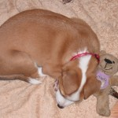
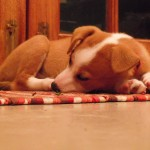

On a Cow and a Door

I promise I will try and take more pictures of Roxy awake / doing stuff.
I have been spending a lot of time at my desk recently, and she sleeps next to it.
And is cute.
I promise I will try and take more pictures of Roxy awake / doing stuff.
I have been spending a lot of time at my desk recently, and she sleeps next to it.
And is cute.
So, Roxy seemed to love Shekinah Lodge.
She came home very tired*, a bit scratched**, and very happy.
It took her a minute to come out of the Wendy house and say hello because she was so deep asleep!
She seems to have remembered all the basic level training from “before,” but is struggling a bit with the compound command stuff. And this morning she was just mental. “Run! I wish to Run!”
We have finally caved in to her demands and have got her a cellphone.
At least now we can check on her via SMS whenever we want.
What? We’re not mad.
It’s only a Pay As You Go!
Pffft!***
Roxy is now sleeping through night, mostly.
The problem is that rest of The Zoo sets her off.
Sproing likes to “Start Some Shit” or “Set It Off” an hour or half an hour before actual waking up time, and tis wakes up Roxy.
She tends to settle down and go back to sleep after a quick trip outside, though.
House training seems to be pretty much sorted. This is partially because we don’t give her the chance to get it wrong.
When we started getting all these free papers over the wall a while ago, we were happy because we needed them. Now they’re just mounting up in the cupboard because we’re not using them.
My spies tell me that some people read newspapers.
I am intrigued by this.
_____
* – two days. She
basically just slept for two days after she came back. I think she was playing all day long while she was there.
** – a few minor cuts and scrapes that you’d expect from all day rough and tumble on a farm with a bunch of other dogs. I don’t think she even noticed!
***- yes, this paragraph was a “joke.”
I swear that the kennel has some kind of grow-beams in it.
Every time she comes out of that thing she looks bigger.
Idea for T-Shirt:
Converting Puppy to Dog.
One kibble at a time.
Newlands.
A land of… land. And Newness.
And a forest where people like to walk their doggies a lot.
Now including us!


All the people and most of the dogs like Roxy lotsly. Yay!
She also had a trip to Starke Ayres garden centre where she was adored by all. 
I will make a terrible, boastful, human-parent…


She has slightly more than doubled in size since we got her.
Crikey!
The terrible twos, as they call it for humans, are on us.
She’s starting to be naughty and misbehave a bit.
On the other hand, we took her to House of Lawful Good & Evil last night for our traditional Sunday shenanigans, and Jo and I did a full training session with her in the house. Yay!
And, once we got her an old towel to sleep on, she collapsed asleep for a few hours. Yay!
She has an awesome new collar:

Just in time for Talk Like A Pirate Day!
Fair, but must try harder.

Both cats are standing up to Roxy more (which good because she’s about to outsize them). The don’t run way much – they sit and stare and punch as necessary.
Um, not so good. For me. Quite tired.
At the moment we’re getting up in the middle of the night, then again at about 6.
Roxy’s quite good at crawling back into her bed, though. We get up at 6.30, but she’s happy to snooze that little section between 6ish and 6.30(ish!).
Walkies!

That was the other day. We’re going for short morning walks every day now.
She’s a little nervous, but very nose-excited by it all.
Leash training is progressing. She’s getting good at not pulling.
Observe the cunning belt-leash technique: two hands free!
We’re more aggressively crating now. As in doing it more.
I like it.
I confess to be jealous of the greeting that Jo gets when she comes home. Roxy is mega excited – I shall try and get a pic of the tail wagging the dog.
Now, I get that greeting when I let her out of the crate. So nice! 
She is, alas, chasing the cats more rather than less.
She doesn’t want to eat them, she just wants to play. The cats do not.
But, all in all, being a puppy daddy is worth the hard work. 
And seeing the kibbles transform into dog is awesome. She is growing fast!
Here are some pictures of Roxy sleeping. We like her sleeping. She is cute and not too mad.

The first few nights were pretty bad.
But that was kind of expected.
She was quite whiney on her first night in the house, but got much better each night after that.
But what about the puppy, you ask? Oh, you cad!
…
Last night we only got up once to let her out (to “do her business” 1).
This was very good.
I will not discuss size, consistency, colour, shape, of bowel movements (as some parents (of animals or humans) are wont to do), but I will say that it is surprising how quickly you adapt to the everyday ickyness / grossness of it. Just this morning I was following Roxy around the garden on a toilet break (hers) while munching on an apple (mine).
Sort of related: I’m keen on starting all training early.
We’re doing sit and stay and come (erm…) stuff right now, with treats.
I do realise that it’s mostly training us (say it fast enough / at the right time and it looks like she was doing what we said – how awesome?! rofllolbbq!), but hopefully we’re laying some framework type stuff.
So far one of the hardest parts of being a puppy daddy is realising the timing. The days at home seem to last a long time. So much can happen in one day. It’s difficult to keep in mind that these training things take weeks or months to get right.
Not losing your temper is also difficult. Being tired out always makes me snappy (sorry, Jo!), and with the pupista that means being more slightly more aggressive or short tempered than I would like to be. I won’t hit Roxy, but I might pull a toy away slightly harder than I should.
I’m not angry, I’m just disappointed (in myself).
But I’ll get better.
And she’ll get better.
And Stv will make a good puppy daddy.

_______________________
1 – wees and poos. Not dealing crack cocaine. She’s a puppy, for goodness sake!
2 – Idea: remove all references to dog / puppy, drive traffic to site, see what strangers think this blog is about… [Waddayamean there was no 2? Oh, right. Sorry. You ain’t seen me- roight?]
This is a bit out of sequence, but: current big task is to get Roxy used to being on her own.
Since I work from home she’ll be spending a lot of time around me. This is groovy.
However, I do need to leave the house during the day occasionally (to buy chocolate or go and drink beer with Evo, for example).
Also, Jo and I are quite social creatures and we like to go out and see people for dinner in the evening.
So, what to do with doggy?
We tried some kennel action yesterday. I had to go out for about two hours to a meeting.
We spent time with her, getting her used to the kennel, gave her a whole bunch of her toys and stuff, but the experiment was basically a failure.
She managed to get out of the enclosure we’d built on the stoop around the kennel and was barking / yowling at the bedroom window.
I suspect the cats (i.e. Sproing) took the opportunity to be less than friendly with her. Fear The Claw.
So, new plan, after more researching: leave her in the house, in a closed off area.
She sleeps in a dog bed next to our bed. For now, we close this off so that she only has access to a bit of the bedroom – the bit with newspaper on the floor.
The plan is to put her there while we’re out, to tire her out by lots of playing before we leave, and to leave her with her toys and a stuffed Kong thingy (which, btw, are silly good.).
Second prong of plan is to put her there during the daytime to get used to being away from Teh Humans.
Which is where she is right now.
Sleeping.
In other news: I am sleepy and am having great trouble concentrating on work.
As you may be able to tell…

{kind=link}
{kind=link}
{kind=link}
{kind=link}